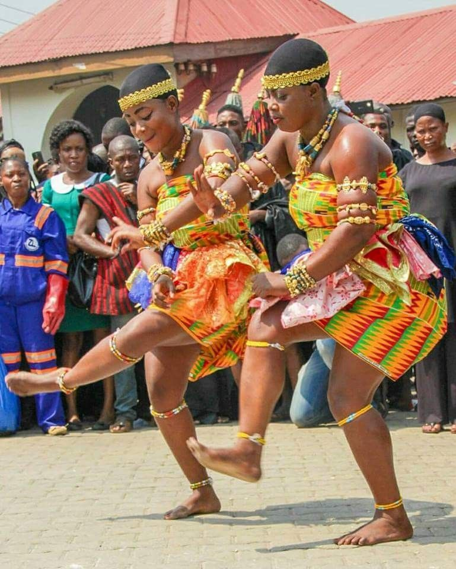
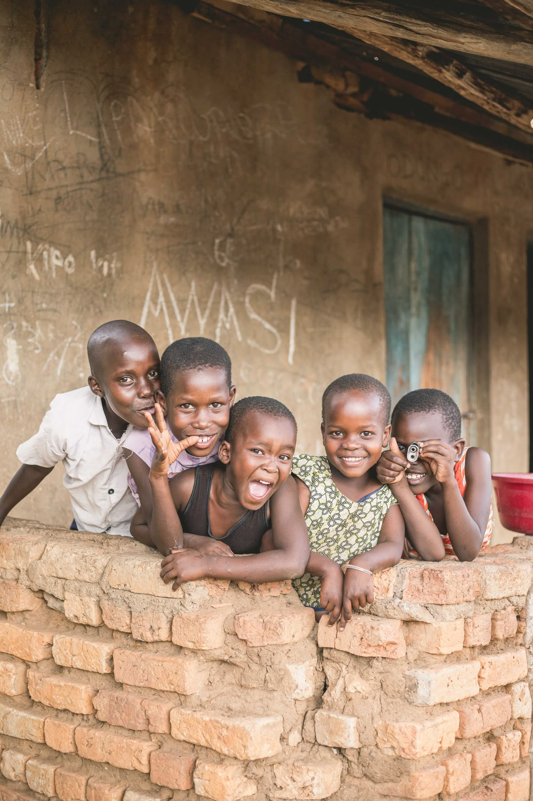
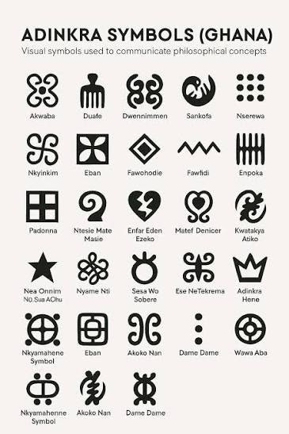
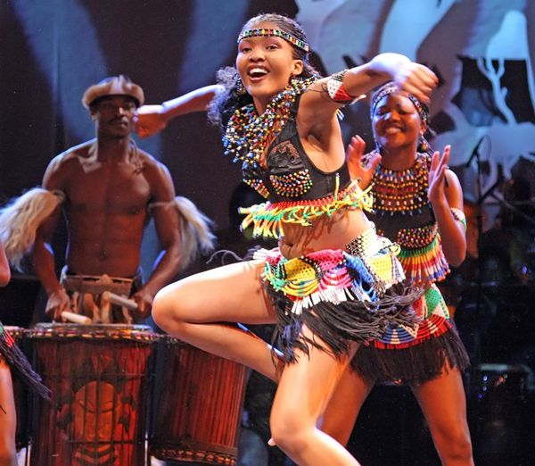
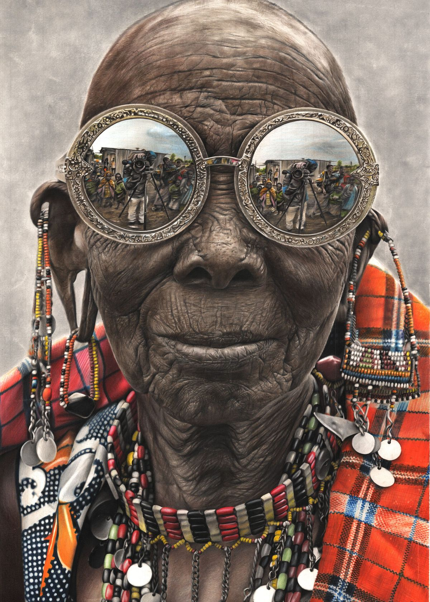
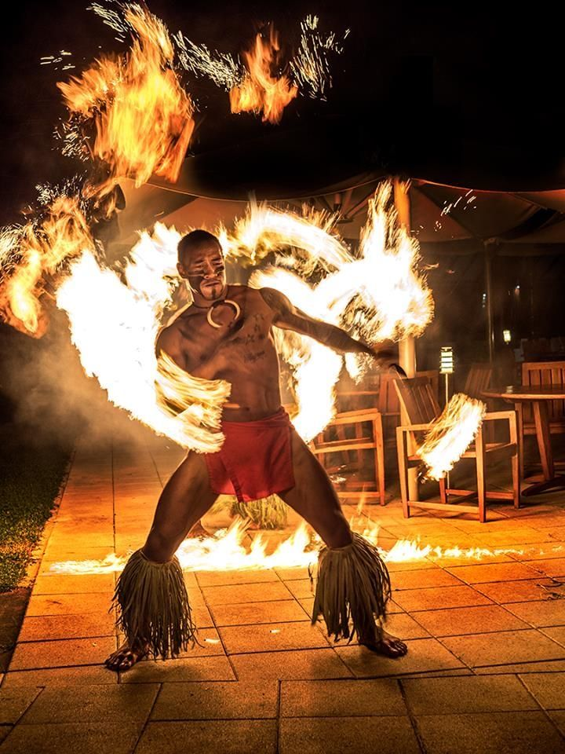

Gallery






The Akan people are the largest ethno-linguistic people in Ghana ,comprising major subgroups such as the Ahsanti,Fante and Akuapem. They are organized into eight major matrilineal clans, known as the abusua. Every Akan belongs to one of these clans, which dictate lineage, inheritance, and succession. Members of the same clan consider each other blood relatives and cannot intermarry.

The akan are famous for kente cloth which is brightly colored,hand-woven fabric historically worn by royalty. They also have goldweights which are basically intricate brass miniatures used historically to measure gold dust via the lost-wax casting method. Anansesem involves folktales featuring the trictster Ananse. Religion played an important role in akan society where they believed in one supreme God called Nyame,together with ancestors and lesser spirits.



